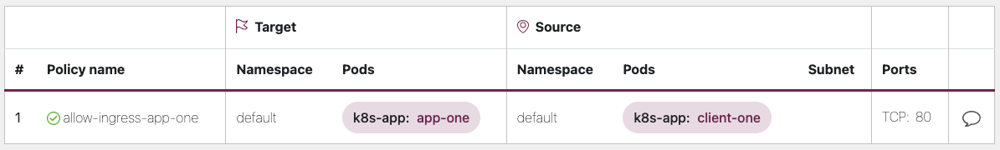

네트워크 보안¶
네트워크 보안에는 여러 측면이 있습니다. 첫 번째는 서비스 간의 네트워크 트래픽 흐름을 제한하는 규칙 적용과 관련됩니다. 두 번째는 전송 중인 트래픽의 암호화와 관련이 있습니다. EKS에서 이런 보안 조치를 구현하는 메커니즘은 다양하지만 종종 다음 항목을 포함합니다.
트래픽 관리¶
- 네트워크 정책
- 보안 그룹
네트워크 암호화¶
- 서비스 메시
- 컨테이너 네트워크 인터페이스(CNI)
- 인그레스 컨트롤러와 로드밸런서
- Nitro 인스턴스
- cert-manager와 ACM Private CA
네트워크 정책¶
쿠버네티스 클러스터 내에서는 기본적으로 모든 파드와 파드 간의 통신이 허용된다. 이러한 유연성은 실험을 촉진하는 데 도움이 될 수 있지만 안전한 것으로 간주되지는 않습니다. 쿠버네티스 네트워크 정책은 파드 간 통신(East/West 트래픽이라고도 함)과 파드와 외부 서비스 간의 네트워크 트래픽을 제한하는 메커니즘을 제공합니다. 쿠버네티스 네트워크 정책은 OSI 모델의 계층 3과 4에서 작동합니다. 네트워크 정책은 파드, 네임스페이스 셀렉터 및 레이블을 사용하여 소스 및 대상 파드를 식별하지만 IP 주소, 포트 번호, 프로토콜 또는 이들의 조합을 포함할 수도 있습니다. 네트워크 정책은 파드에 대한 인바운드 또는 아웃바운드 연결 모두에 적용할 수 있으며, 이를 인그레스(ingress) 및 이그레스(egress) 규칙이라고도 합니다.
Amazon VPC CNI 플러그인의 기본 네트워크 정책 지원을 통해 네트워크 정책을 구현하여 쿠버네티스 클러스터의 네트워크 트래픽을 보호할 수 있습니다. 이는 업스트림 쿠버네티스 네트워크 정책 API와 통합되어 호환성과 쿠버네티스 표준 준수를 보장합니다. 업스트림 API에서 지원하는 다양한 식별자를 사용하여 정책을 정의할 수 있습니다. 기본적으로 모든 수신 및 송신 트래픽은 파드에 허용됩니다. PolicyType Ingress가 포함된 네트워크 정책을 지정하는 경우 파드 노드의 연결과 인그레스 규칙에서 허용하는 연결만 파드에 대한 연결만 허용됩니다. 이그레스 규칙에도 동일하게 적용됩니다. 여러 규칙이 정의된 경우 결정을 내릴 때 모든 규칙의 통합을 고려합니다. 따라서 평가 순서는 정책 결과에 영향을 미치지 않습니다.
Attention
EKS 클러스터를 처음 프로비저닝할 때 VPC CNI 네트워크 정책 기능은 기본적으로 활성화되지 않습니다. 지원되는 VPC CNI 애드온 버전을 배포했는지 확인하고 vpc-cni 애드온에서 ENABLE_NETWORK_POLICY 플래그를 true로 설정하여 이를 활성화하세요. 자세한 지침은 Amazon EKS 사용자 가이드를 참조하십시오.
권장사항¶
네트워크 정책 시작하기 - 최소 권한 원칙 적용¶
디폴트 거부(deny) 정책 만들기¶
RBAC 정책과 마찬가지로 네트워크 정책에서도 최소 권한 액세스 원칙을 따르는 것이 좋습니다. 먼저 네임스페이스 내에서 모든 인바운드 및 아웃바운드 트래픽을 제한하는 '모두 거부' 정책을 만드세요.
apiVersion: networking.k8s.io/v1
kind: NetworkPolicy
metadata:
name: default-deny
namespace: default
spec:
podSelector: {}
policyTypes:
- Ingress
- Egress

Tip
위 이미지는 Tufin의 네트워크 정책 뷰어로 생성되었습니다.
DNS 쿼리를 허용하는 규칙 만들기¶
기본 거부 모든 규칙을 적용한 후에는 파드가 이름 확인을 위해 CoreDNS를 쿼리하도록 허용하는 전역 규칙과 같은 추가 규칙에 계층화를 시작할 수 있습니다. 네임스페이스에 레이블을 지정하여 시작합니다.
apiVersion: networking.k8s.io/v1
kind: NetworkPolicy
metadata:
name: allow-dns-access
namespace: default
spec:
podSelector:
matchLabels: {}
policyTypes:
- Egress
egress:
- to:
- namespaceSelector:
matchLabels:
kubernetes.io/metadata.name: kube-system
podSelector:
matchLabels:
k8s-app: kube-dns
ports:
- protocol: UDP
port: 53

네임스페이스/파드 간 트래픽 흐름을 선택적으로 허용하는 규칙을 점진적으로 추가¶
애플리케이션 요구 사항을 이해하고 필요에 따라 세분화된 수신 및 송신 규칙을 생성하십시오. 아래 예는 포트 80의 인그레스 트래픽을 client-one에서 app-one으로 제한하는 방법을 보여줍니다. 이렇게 하면 공격 표면을 최소화하고 인증되지 않은 접근에 대한 위험을 줄일 수 있습니다.
apiVersion: networking.k8s.io/v1
kind: NetworkPolicy
metadata:
name: allow-ingress-app-one
namespace: default
spec:
podSelector:
matchLabels:
k8s-app: app-one
policyTypes:
- Ingress
ingress:
- from:
- podSelector:
matchLabels:
k8s-app: client-one
ports:
- protocol: TCP
port: 80

네트워크 정책 적용 모니터링¶
- 네트워크 정책 편집기 사용
- 네트워크 정책 편집기는 네트워크 흐름 로그의 시각화, 보안 점수, 자동 생성을 지원합니다.
- 상호활동적으로 네트워크 정책 구성하세요.
- 로그 감사
- EKS 클러스터의 감사 로그를 정기적으로 검토하세요.
- 감사 로그는 네트워크 정책 변경을 포함하여 클러스터에서 수행된 작업에 대한 풍부한 정보를 제공합니다.
- 이 정보를 사용하여 시간 경과에 따른 네트워크 정책 변경 사항을 추적하고 승인되지 않았거나 예상치 못한 변경을 감지할 수 있습니다.
- 테스트 자동화
- 운영 환경을 미러링하는 테스트 환경을 만들고 네트워크 정책을 위반하려는 워크로드를 정기적으로 배포하여 자동화된 테스트를 구현하십시오.
- 메트릭 지표 모니터링
- VPC CNI 노드 에이전트에서 프로메테우스 메트릭을 수집하도록 옵저버빌리티 에이전트를 구성하여 에이전트 상태 및 SDK 오류를 모니터링할 수 있습니다.
- 정기적으로 네트워크 정책을 감사
- 네트워크 정책을 정기적으로 감사하여 현재 애플리케이션 요구 사항을 충족하는지 확인하십시오.애플리케이션이 발전함에 따라 감사를 통해 중복된 인그레스, 이그레스 규칙을 제거하고 애플리케이션에 과도한 권한이 부여되지 않도록 할 수 있습니다.
- Open Policy Agent(OPA)를 사용하여 네트워크 정책이 존재하는지 확인
- 아래와 같은 OPA 정책을 사용하여 애플리케이션 파드를 온보딩하기 전에 네트워크 정책이 항상 존재하는지 확인하십시오. 이 정책은 해당 네트워크 정책이 없는 경우
k8s-app: sample-app이라는 레이블이 붙은 k8s 파드의 온보딩을 거부합니다.
package kubernetes.admission
import data.kubernetes.networkpolicies
deny[msg] {
input.request.kind.kind == "Pod"
pod_label_value := {v["k8s-app"] | v := input.request.object.metadata.labels}
contains_label(pod_label_value, "sample-app")
np_label_value := {v["k8s-app"] | v := networkpolicies[_].spec.podSelector.matchLabels}
not contains_label(np_label_value, "sample-app")
msg:= sprintf("The Pod %v could not be created because it is missing an associated Network Policy.", [input.request.object.metadata.name])
}
contains_label(arr, val) {
arr[_] == val
}
문제 해결 (트러블슈팅)¶
vpc-network-policy-controller 및 node-agent 로그 모니터링¶
EKS 컨트롤 플레인의 컨트롤러 매니저 로그를 활성화하여 네트워크 정책 기능을 진단합니다. 컨트롤 플레인 로그를 CloudWatch 로그 그룹으로 스트리밍하고 CloudWatch Log Insights를 사용하여 고급 쿼리를 수행할 수 있습니다. 로그에서 네트워크 정책으로 확인된 파드 엔드포인트 객체, 정책의 조정 상태를 확인하고 정책이 예상대로 작동하는지 디버깅할 수 있습니다.
또한 Amazon VPC CNI를 사용하면 EKS 워커 노드에서 정책 적용 로그를 수집하고 Amazon Cloudwatch 로 내보낼 수 있습니다. 활성화되면 CloudWatch Container Insights를 활용하여 네트워크 정책과 관련된 사용에 대한 통찰력을 제공할 수 있습니다.
또한 Amazon VPC CNI는 노드 내 eBPF 프로그램과 상호 작용할 수 있는 인터페이스를 제공하는 SDK를 제공합니다. SDK는 aws-node가 노드에 배포될 때 설치됩니다. 노드의 /opt/cni/bin 디렉터리에서 설치된 SDK 바이너리를 찾을 수 있습니다. 출시 시 SDK는 eBPF 프로그램 및 맵 검사와 같은 기본 기능을 지원합니다.
네트워크 트래픽 메타데이터 로깅¶
AWS VPC Flow Logs는 VPC를 통과하는 트래픽에 대한 메타데이터(예: 소스 및 대상 IP 주소, 포트)를 허용/드랍된 패킷과 함께 캡처합니다. 이 정보를 분석하여 VPC 내 리소스(파드 포함) 간에 의심스럽거나 특이한 활동이 있는지 확인할 수 있습니다. 하지만 파드의 IP 주소는 교체될 때 자주 변경되므로 플로우 로그만으로는 충분하지 않을 수 있다. Calico Enterprise는 파드 레이블 및 기타 메타데이터를 사용하여 플로우 로그를 확장하여 파드 간 트래픽 흐름을 더 쉽게 해독할 수 있도록 합니다.
보안 그룹¶
EKS는 AWS VPC 보안 그룹(SG)을 사용하여 쿠버네티스 컨트롤 플레인과 클러스터의 워커 노드 사이의 트래픽을 제어합니다. 보안 그룹은 워커 노드, 기타 VPC 리소스 및 외부 IP 주소 간의 트래픽을 제어하는 데에도 사용됩니다. EKS 클러스터 (쿠버네티스 버전 1.14-eks.3 이상)를 프로비저닝하면 클러스터 보안 그룹이 자동으로 생성됩니다. 이 보안 그룹은 EKS 컨트롤 플레인과 관리형 노드 그룹의 노드 간의 자유로운 통신을 허용합니다. 단순화를 위해 비관리형 노드 그룹을 포함한 모든 노드 그룹에 클러스터 SG를 추가하는 것이 좋습니다.
쿠버네티스 버전 1.14 및 EKS 버전 eks.3 이전에는 EKS 컨트롤 플레인 및 노드 그룹에 대해 별도의 보안 그룹이 구성되었습니다. 컨트롤 플레인 및 노드 그룹 보안 그룹에 대한 최소 및 권장 규칙은 AWS 문서에서 확인할 수 있습니다. 컨트롤 플레인 보안 그룹 의 최소 규칙에 따라 워커 노드 보안그룹에서 포트 443을 인바운드할 수 있습니다. 이 규칙은 kubelets가 쿠버네티스 API 서버와 통신할 수 있도록 하는 규칙입니다. 또한 워커 노드 보안그룹로의 아웃바운드 트래픽을 위한 포트 10250도 포함되어 있습니다. 10250은 kubelet이 수신하는 포트입니다. 마찬가지로 최소 노드 그룹 규칙은 컨트롤 플레인 보안그룹에서 포트 10250을 인바운드하고 컨트롤 플레인 보안그룹로 아웃바운드하는 443을 허용합니다. 마지막으로 노드 그룹 내 노드 간의 자유로운 통신을 허용하는 규칙이 있습니다.
클러스터 내에서 실행되는 서비스와 RDS 데이터베이스와 같이 클러스터 외부에서 실행되는 서비스 간의 통신을 제어해야 하는 경우 파드용 보안 그룹을 고려해 보세요. 파드용 보안 그룹을 사용하면 파드 컬렉션에 기존 보안 그룹을 할당할 수 있다.
Warning
파드를 생성하기 전에 존재하지 않는 보안 그룹을 참조하는 경우, 파드는 스케줄링되지 않는다.
SecurityGroupPolicy 객체를 생성하고 PodSelector 또는 ServiceAccountSelector를 지정하여 어떤 파드를 보안 그룹에 할당할지 제어할 수 있습니다. 셀렉터를 {}로 설정하면 SecurityGroupPolicy에서 참조하는 보안그룹이 네임스페이스의 모든 파드 또는 네임스페이스의 모든 서비스 어카운트에 할당됩니다. 파드용 보안 그룹을 구현하기 전에 고려 사항을 모두 숙지해야 합니다.
Important
파드에 보안그룹을 사용하는 경우 클러스터 보안 그룹에 포트 53이 아웃바운드되도록 허용하는 보안그룹을 생성해야 합니다. 마찬가지로, 파드 보안 그룹의 포트 53 인바운드 트래픽을 허용하도록 클러스터 보안 그룹을 업데이트해야 합니다.
Important
파드용 보안 그룹을 사용할 때에도 보안 그룹 제한사항이 여전히 적용되므로 신중하게 사용해야 합니다.
Important
파드에 구성된 모든 프로브에 대해 클러스터 보안 그룹 (kubelet)의 인바운드 트래픽에 대한 규칙을 필수 생성해야 합니다.
Important
파드의 보안 그룹은 EC2 인스턴스의 여러 개의 ENI를 할당 하기 위해 ENI 트렁킹 기능을 사용합니다. 파드가 보안그룹에 할당되면 VPC 컨트롤러는 노드 그룹의 브랜치 ENI를 파드와 연결합니다. 파드가 예약될 때 노드그룹에서 사용할 수 있는 브랜치 ENI가 충분하지 않은 경우 파드는 보류 상태로 유지됩니다. 인스턴스가 지원할 수 있는 브랜치 ENI의 수는 인스턴스 유형/패밀리에 따라 다릅니다. 자세한 내용은 AWS 문서를 참조하십시오.
파드용 보안 그룹은 정책 데몬의 오버헤드 없이 클러스터 내부 및 외부의 네트워크 트래픽을 제어할 수 있는 AWS 네이티브 방법을 제공하지만 다른 옵션도 사용할 수 있습니다. 예를 들어 Cilium 정책 엔진을 사용하면 네트워크 정책에서 DNS 이름을 참조할 수 있습니다. Calico Enterprise에는 네트워크 정책을 AWS 보안 그룹에 매핑하는 옵션이 포함되어 있습니다. Istio와 같은 서비스 메시를 구현한 경우, 이그레스 게이트웨이를 사용하여 네트워크 송신을 검증된 특정 도메인 또는 IP 주소로 제한할 수 있습니다. 이 옵션에 대한 자세한 내용은 Istio의 이그레스 트래픽 제어에 대한 3부작 시리즈를 참조하십시오.
언제 네트워크 정책과 파드용 보안 그룹을 사용해야 할까요?¶
쿠버네티스 네트워크 정책을 사용하는 경우¶
- 파드-파드 간 트래픽 제어
- 클러스터 내 파드 간 네트워크 트래픽(이스트-웨스트 트래픽) 제어에 적합
- IP 주소 또는 포트 수준에서 트래픽 제어 (OSI 계층 3 또는 4)
파드용 AWS 보안 그룹(SGP) 을 사용해야 하는 경우¶
- 기존 AWS 구성 활용
- AWS 서비스에 대한 액세스를 관리하는 복잡한 EC2 보안 그룹이 이미 있고 애플리케이션을 EC2 인스턴스에서 EKS로 마이그레이션하는 경우 SGP는 보안 그룹 리소스를 재사용하고 이를 파드에 적용할 수 있는 매우 좋은 선택이 될 수 있습니다.
- AWS 서비스에 대한 접근 제어
- EKS 클러스터 내에서 실행되는 애플리케이션이 다른 AWS 서비스(RDS 데이터베이스)와 통신하려는 경우 SGP를 효율적인 메커니즘으로 사용하여 파드에서 AWS 서비스로의 트래픽을 제어합니다.
- 파드 및 노드 트래픽 격리
- 파드 트래픽을 나머지 노드 트래픽과 완전히 분리하려면
POD_SECURITY_GROUP_ENFORCING_MODE=strict모드에서 SGP를 사용하십시오.
파드용 보안 그룹 및 네트워크 정책 모범 사례¶
- 레이어별 보안
- 계층화된 보안 접근 방식을 위해 SGP와 쿠버네티스 네트워크 정책을 함께 사용하십시오.
- SGP를 사용하여 클러스터에 속하지 않은 AWS 서비스에 대한 네트워크 수준 액세스를 제한하는 반면, 쿠버네티스 네트워크 정책은 클러스터 내 파드 간 네트워크 트래픽을 제한할 수 있습니다.
- 최소 권한 원칙
- 파드 또는 네임스페이스 간에 필요한 트래픽만 허용
- 애플리케이션 격리
- 가능한 경우 네트워크 정책에 따라 애플리케이션을 구분하여 애플리케이션이 손상된 경우 침해 범위를 줄이십시오.
- 정책을 단순하고 명확하게 유지
- 쿠버네티스 네트워크 정책은 매우 세밀하고 복잡할 수 있으므로 잘못된 구성의 위험을 줄이고 관리 오버헤드를 줄이려면 가능한 한 단순하게 유지하는 것이 가장 좋습니다.
- 공격 범위 축소
- 애플리케이션 노출을 제한하여 공격 표면을 최소화합니다.
Caution
파드용 보안 그룹은 strict과 standard이라는 두 가지 적용 모드를 제공합니다. EKS 클러스터의 파드 기능에 네트워크 정책과 보안 그룹을 모두 사용할 때는 standard 모드를 사용해야 합니다.
네트워크 보안과 관련해서는 계층화된 접근 방식이 가장 효과적인 솔루션인 경우가 많습니다. 쿠버네티스 네트워크 정책과 SGP를 함께 사용하면 EKS에서 실행되는 애플리케이션을 위한 강력한 심층 방어 전략을 제공할 수 있습니다.
서비스 메시 정책 적용 또는 쿠버네티스 네트워크 정책¶
'서비스 메시'는 애플리케이션에 추가할 수 있는 전용 인프라 계층입니다. 이를 통해 가시성, 트래픽 관리, 보안 등의 기능을 자체 코드에 추가하지 않고도 투명하게 추가할 수 있습니다.
서비스 메시는 OSI 모델의 계층 7 (애플리케이션) 에서 정책을 적용하는 반면, 쿠버네티스 네트워크 정책은 계층 3 (네트워크) 및 계층 4 (전송) 에서 작동합니다.이 분야에는 AWS AppMesh, Istio, Linkerd 등과 같은 다양한 제품이 있습니다.
정책 시행에 서비스 메시를 사용하는 경우¶
- 서비스 메쉬가 구성되어 있는 경우
- 트래픽 관리, 옵저버빌리티 및 보안과 같은 고급 기능이 필요한 경우
- 트래픽 제어, 로드 밸런싱, 서킷 브레이킹, 속도 제한, 타임아웃 등
- 서비스가 잘 동작하는지에 대한 자세한 인사이트 (레이턴시, 오류율, 초당 요청 수, 요청량 등)
- mTLS과 같은 보안 기능을 위해 서비스 메시를 구현하고 활용하고자 합니다.
더 간단한 사용 사례를 위해 쿠버네티스 네트워크 정책을 선택하세요¶
- 서로 통신할 수 있는 파드를 제한하세요.
- 네트워크 정책은 서비스 메시보다 필요한 리소스가 적기 때문에 단순한 사용 사례나 서비스 메시의 실행 및 관리 오버헤드가 정당하지 않을 수 있는 소규모 클러스터에 적합합니다.
Tip
네트워크 정책과 서비스 메시를 함께 사용할 수도 있습니다. 네트워크 정책을 사용하여 파드 간에 기본 수준의 보안 및 격리를 제공한 다음 서비스 메시를 사용하여 트래픽 관리, 관찰 가능성 및 보안과 같은 추가 기능을 추가합니다.
서드파티 네트워크 정책 엔진¶
글로벌 네트워크 정책, DNS 호스트 이름 기반 규칙 지원, 계층 7 규칙, 서비스 어카운트 기반 규칙, 명시적 거부/로그 작업 등과 같은 고급 정책 요구 사항이 있는 경우 타사 네트워크 정책 엔진을 고려해 보십시오. Calico는 EKS와 잘 작동하는 Tigera의 오픈 소스 정책 엔진입니다. Calico는 Kubernetes 네트워크 정책 기능 전체를 구현하는 것 외에도 Istio와 통합될 경우 계층 7 규칙 (예: HTTP)에 대한 지원을 포함하여 더 다양한 기능을 갖춘 확장 네트워크 정책을 지원합니다. Calico 정책의 범위는 네임스페이스, 파드, 서비스 어카운트 또는 전 세계로 지정할 수 있습니다. 정책 범위를 서비스 어카운트으로 지정하면 수신/송신 규칙 집합이 해당 서비스 어카운트과 연결됩니다. 적절한 RBAC 규칙을 적용하면 팀에서 이런 규칙을 재정의하는 것을 방지하여 IT 보안 전문가가 네임스페이스 관리를 안전하게 위임할 수 있습니다. 마찬가지로 Cilium의 관리자들도 HTTP와 같은 계층 7 규칙에 대한 부분적 지원을 포함하도록 네트워크 정책을 확장했습니다. 또한 Cilium은 DNS 호스트 이름을 지원하는데, 이는 쿠버네티스 서비스/파드와 VPC 내부 또는 외부에서 실행되는 리소스 간의 트래픽을 제한하는 데 유용할 수 있다. 반대로 Calico Enterprise에는 쿠버네티스 네트워크 정책을 AWS 보안 그룹과 DNS 호스트 이름에 매핑할 수 있는 기능이 포함되어 있습니다.
이 Github 프로젝트에서 일반적인 쿠버네티스 네트워크 정책 목록을 찾을 수 있습니다. Calico에 대한 유사한 규칙 세트는 Calico 문서에서 확인할 수 있습니다.
Amazon VPC CNI 네트워크 정책 엔진으로 마이그레이션¶
일관성을 유지하고 예상치 못한 파드 통신 동작을 방지하려면 클러스터에 네트워크 정책 엔진을 하나만 배포하는 것이 좋습니다. 3P에서 VPC CNI 네트워크 정책 엔진으로 마이그레이션하려는 경우 VPC CNI 네트워크 정책 지원을 활성화하기 전에 기존 3P 네트워크 정책 CRD를 쿠버네티스 네트워크 정책 리소스로 변환하는 것이 좋습니다. 또한 마이그레이션된 정책을 프로덕션 환경에 적용하기 전에 별도의 테스트 클러스터에서 테스트하세요. 이를 통해 파드 통신 동작의 잠재적 문제나 불일치를 식별하고 해결할 수 있습니다.
마이그레이션 도구¶
마이그레이션 프로세스를 지원하기 위해 기존 Calico/Cilium 네트워크 정책 CRD를 쿠버네티스 네이티브 네트워크 정책으로 변환하는 K8s Network Policy Migrator 도구를 개발했습니다. 변환 후에는 VPC CNI 네트워크 정책 컨트롤러를 실행하는 새 클러스터에서 변환된 네트워크 정책을 직접 테스트할 수 있습니다. 이 도구는 마이그레이션 프로세스를 간소화하고 원활한 전환을 보장하도록 설계되었습니다.
Important
마이그레이션 도구는 네이티브 쿠버네티스 네트워크 정책 API와 호환되는 서드파티 정책만 변환합니다. 서드파티 플러그인이 제공하는 고급 네트워크 정책 기능을 사용하는 경우 마이그레이션 도구는 해당 기능을 건너뛰고 보고합니다.
참고로, 마이그레이션 도구는 현재 AWS VPC CNI 네트워크 정책 엔지니어링 팀에서 지원하지 않으며, 고객이 최선의 노력을 기울여 사용할 수 있도록 만들어졌습니다. 마이그레이션 프로세스를 원활하게 진행하려면 이 도구를 활용하는 것이 좋습니다. 도구에서 문제나 버그가 발생하는 경우 Github 이슈를 생성해 주시기 바랍니다. 여러분의 피드백은 우리에게 매우 소중하며 서비스를 지속적으로 개선하는 데 도움이 됩니다.
추가 리소스¶
- Kubernetes & Tigera: 네트워크 정책, 보안 및 감사
- Calico Enterprise
- Cilium
- NetworkPolicy Editor Cilium의 대화형 정책 편집자
- Inspektor Gadget advise network-policy gadget는 네트워크 트래픽 분석을 기반으로 네트워크 정책을 제안합니다.
전송 암호화¶
PCI, HIPAA 또는 기타 규정을 준수해야 하는 애플리케이션은 전송 중에 데이터를 암호화해야 합니다. 오늘날 TLS는 유선 트래픽을 암호화하기 위한 사실상 표준 방식입니다. TLS는 이전 SSL과 마찬가지로 암호화 프로토콜을 사용하여 네트워크를 통해 보안 통신을 제공합니다. TLS는 세션 시작 시 협상되는 공유 암호를 기반으로 데이터를 암호화하는 키를 생성하는 대칭 암호화를 사용합니다. 다음은 쿠버네티스 환경에서 데이터를 암호화할 수 있는 몇 가지 방법입니다.
Nitro 인스턴스¶
다음 Nitro 인스턴스 유형 (예: C5n, G4, I3en, M5dn, M5n, P3dn, R5dn, R5n)간에 교환되는 트래픽은 기본적으로 자동 암호화됩니다. Transit Gateway 또는 로드밸런서와 같이 중간 홉이 있는 경우 트래픽은 암호화되지 않습니다. 전송 중 암호화에 대한 자세한 내용과 기본적으로 네트워크 암호화를 지원하는 인스턴스 유형의 전체 목록은 전송 암호화 문서를 참조하십시오.
컨테이너 네트워크 인터페이스(CNI)¶
WeAvenet은 슬리브 트래픽(더 느린 패킷 포워딩 접근 방식)에는 NaCL 암호화를 사용하고 빠른 데이터 경로 트래픽에는 IPsec ESP를 사용하여 모든 트래픽을 자동으로 암호화하도록 구성할 수 있습니다.
서비스 메시¶
전송 중 암호화는 AppMesh, Linkerd v2 및 Istio와 같은 서비스 메시를 사용하여 구현할 수도 있습니다. AppMesh는 X.509 인증서 또는 Envoy의 비밀 검색 서비스(SDS)를 사용하는 mTLS를 지원합니다. Linkerd와 Istio 모두 mTLS를 지원합니다.
aws-app-mesh-examples GitHub 리포지토리는 X.509 인증서 및 SPIRE를 Envoy 컨테이너와 함께 SDS 공급자로 사용하여 MTL을 구성하는 방법을 제공합니다:
또한 App Mesh는 AWS Certificate Manager(ACM)에서 발급한 사설 인증서 또는 가상 노드의 로컬 파일 시스템에 저장된 인증서를 사용하여 TLS 암호화를 지원합니다.
- aws-app-mesh-examples GitHub 리포지토리는 ACM에서 발급한 인증서 및 Envoy 컨테이너와 함께 패키징된 인증서를 사용하여 TLS를 구성하는 방법을 안내합니다:
- 파일 제공 TLS 인증서를 사용하여 TLS 구성
- AWS Certificate Manager를 사용하여 TLS 구성
인그레스 컨트롤러 및 로드밸런서¶
인그레스 컨트롤러는 클러스터 외부에서 발생하는 HTTP/S 트래픽을 클러스터 내에서 실행되는 서비스로 지능적으로 라우팅하는 방법입니다. 이런 인그레스 앞에 CLB(Classic Load Balancer) 또는 NLB(Network Load Balancer)와 같은 레이어 4 로드밸런서가 있는 경우가 많습니다. 암호화된 트래픽은 네트워크 내 여러 위치 (예: 로드밸런서, 인그레스 리소스, 파드) 에서 종료될 수 있다. SSL 연결을 종료하는 방법과 위치는 궁극적으로 조직의 네트워크 보안 정책에 따라 결정됩니다. 예를 들어 엔드 투 엔드 암호화를 요구하는 정책이 있는 경우 Pod에서 트래픽을 해독해야 합니다. 이렇게 되면 파드가 초기 핸드셰이크를 설정하는 데 많은 시간을 소비해야 하므로 파드에 추가적인 부담이 가중됩니다. 전체 SSL/TLS 처리는 CPU 집약도가 매우 높습니다. 따라서 유연성이 있다면 인그레스 또는 로드밸런서에서 SSL 오프로드를 수행해 보세요.
AWS Elastic 로드밸런서를 통한 암호화 사용¶
AWS Application Load Balancer(ALB) 및 Network Load Balancer(NLB) 모두 전송 암호화(SSL 및 TLS)를 지원합니다. ALB에 대한 alb.ingress.kubernetes.io/certificate-arn 어노테이션을 사용하면 ALB에 추가할 인증서를 지정할 수 있습니다. 어노테이션을 생략하면 컨트롤러는 호스트 필드를 사용하여 사용 가능한 AWS Certificate Manager (ACM)인증서를 일치시켜 인증서를 필요로 하는 리스너에 인증서를 추가하려고 시도합니다. EKS v1.15부터 아래 예와 같이 NLB와 함께 service.beta.kubernetes.io/aws-load-balancer-ssl-cert 어노테이션을 사용할 수 있습니다.
apiVersion: v1
kind: Service
metadata:
name: demo-app
namespace: default
labels:
app: demo-app
annotations:
service.beta.kubernetes.io/aws-load-balancer-type: "nlb"
service.beta.kubernetes.io/aws-load-balancer-ssl-cert: "<certificate ARN>"
service.beta.kubernetes.io/aws-load-balancer-ssl-ports: "443"
service.beta.kubernetes.io/aws-load-balancer-backend-protocol: "http"
spec:
type: LoadBalancer
ports:
- port: 443
targetPort: 80
protocol: TCP
selector:
app: demo-app
---
kind: Deployment
apiVersion: apps/v1
metadata:
name: nginx
namespace: default
labels:
app: demo-app
spec:
replicas: 1
selector:
matchLabels:
app: demo-app
template:
metadata:
labels:
app: demo-app
spec:
containers:
- name: nginx
image: nginx
ports:
- containerPort: 443
protocol: TCP
- containerPort: 80
protocol: TCP
다음은 SSL/TLS 종료에 대한 추가 예입니다.
- Securing EKS Ingress With Contour And Let's Encrypt The GitOps Way
- How do I terminate HTTPS traffic on Amazon EKS workloads with ACM?
Caution
AWS LB 컨트롤러와 같은 일부 인그레스는 인그레스 사양의 일부가 아닌 어노테이션을 사용하여 SSL/TLS를 구현합니다.
ACM Private CA 연동 (cert-manager)¶
인증서를 배포, 갱신 및 취소하는 인기 있는 쿠버네티스 애드온인 ACM Private Certificate Authority(CA) 및 cert-manager를 사용하여 수신, 파드, 파드 간에 EKS 애플리케이션 워크로드를 보호하도록 TLS와 mTLS를 활성화할 수 있습니다. ACM Private CA는 자체 CA를 관리하는 데 드는 선결제 및 유지 관리 비용이 없는 가용성이 높고 안전한 관리형 CA입니다. 기본 쿠버네티스 인증 기관을 사용하는 경우 ACM Private CA를 통해 보안을 개선하고 규정 준수 요구 사항을 충족할 수 있습니다. ACM Private CA는 FIPS 140-2 레벨 3 하드웨어 보안 모듈에서 프라이빗 키를 보호합니다(매우 안전함). 이는 메모리에 인코딩된 키를 저장하는 기본 CA (보안 수준이 낮음)와 비교하면 매우 안전합니다. 또한 중앙 집중식 CA를 사용하면 쿠버네티스 환경 내부 및 외부에서 사설 인증서를 더 잘 제어하고 감사 기능을 개선할 수 있습니다.
워크로드 간 상호 TLS를 위한 짧은 수명의 CA 모드¶
EKS 환경에서에서 mTLS용 ACM Private CA를 사용할 때는 _수명이 짧은 CA 모드_와 함께 수명이 짧은 인증서를 사용하는 것이 좋습니다. 범용 CA 모드에서 수명이 짧은 인증서를 발급할 수 있지만 새 인증서를 자주 발급해야 하는 사용 사례에서는 수명이 짧은 CA 모드를 사용하는 것이 더 비용 효율적입니다 (일반 모드보다 최대 75% 저렴). 이 외에도 사설 인증서의 유효 기간을 EKS 클러스터의 파드 수명에 맞춰 조정해야 합니다 여기에서 ACM Private CA와 그 이점에 대해 자세히 알아보십시오.
ACM 구성 가이드¶
먼저 ACM Private CA 문서에 제공된 절차에 따라 Private CA를 생성하십시오. Private CA를 만든 후에는 cert-manager 설치 가이드 절차에 따라 cert-manager를 설치하십시오. cert-manager를 설치한 후 GitHub의 설정 가이드에 따라 Private CA 쿠버네티스 인증서 관리자 플러그인을 설치합니다. 플러그인을 사용하면 인증서 관리자가 ACM Private CA에 사설 인증서를 요청할 수 있습니다.
이제 cert-manager와 플러그인이 설치된 사설 CA와 EKS 클러스터를 만들었으니, 권한을 설정하고 발급자를 생성할 차례입니다. ACM 사설 CA에 대한 액세스를 허용하도록 EKS 노드 역할의 IAM 권한을 업데이트하십시오. <CA_ARN>를 사설 CA의 값으로 바꾸십시오.
{
"Version": "2012-10-17",
"Statement": [
{
"Sid": "awspcaissuer",
"Action": [
"acm-pca:DescribeCertificateAuthority",
"acm-pca:GetCertificate",
"acm-pca:IssueCertificate"
],
"Effect": "Allow",
"Resource": "<CA_ARN>"
}
]
}
서비스 어카운트용 IAM 역할(IRSA)도 사용할 수 있습니다. 전체 예는 아래의 추가 리소스 섹션을 참조하십시오.
아래 예제의 내용을 포함한 cluster-issuer.yaml CRD 파일을 생성하고 <CA_ARN> 및 <Region> 영역을 Private CA 정보로 대체하여 Amazon EKS에서 발급자를 생성합니다.
apiVersion: awspca.cert-manager.io/v1beta1
kind: AWSPCAClusterIssuer
metadata:
name: demo-test-root-ca
spec:
arn: <CA_ARN>
region: <Region>
Deploy the Issuer you created.
EKS 클러스터는 사설 CA에서 인증서를 요청하도록 구성되어 있습니다. 이제 cert-manager의 Certificate 리소스를 사용하여 IssuerRef 필드 값을 위에서 만든 사설 CA 발급자로 변경하여 인증서를 발급할 수 있습니다. 인증서 리소스를 지정하고 요청하는 방법에 대한 자세한 내용은 cert-manager의 인증서 리소스 가이드를 참조하십시오. 다음 예제를 참조하세요..
ACM Private CA 연동 (Istio 및 cert-manager)¶
EKS 클러스터에서 Istio를 실행하는 경우 Istio 컨트롤 플레인 (특히 'istiod') 이 루트 인증 기관 (CA) 으로 작동하지 않도록 설정하고 ACM Private CA를 워크로드 간 MTL의 루트 CA로 구성할 수 있습니다. 이 방법을 사용하려는 경우 ACM Private CA에서 _단기 CA 모드_를 사용하는 것이 좋습니다. 자세한 내용은 이전 섹션 및 이 블로그를 참조하십시오.
Istio에서 인증서 서명 작동 방식 (기본방식)¶
쿠버네티스의 워크로드는 서비스 어카운트를 사용하여 식별됩니다. 서비스 어카운트를 지정하지 않으면 쿠버네티스는 워크로드에 서비스 어카운트를 자동으로 할당합니다. 또한 서비스 어카운트는 관련 토큰을 자동으로 마운트합니다. 이 토큰은 서비스 어카운트에서 쿠버네티스 API에 대한 인증을 위한 워크로드에 사용됩니다. 서비스 어카운트는 쿠버네티스의 ID로 충분할 수 있지만 Istio에는 자체 ID 관리 시스템과 CA가 있습니다. Envoy 사이드카 프록시로 워크로드를 시작하는 경우 Istio에서 할당한 ID가 있어야 해당 워크로드가 신뢰할 수 있는 것으로 간주되고 메시의 다른 서비스와 통신할 수 있습니다.
Istio에서 이 ID를 가져오기 위해 'istio-agent'는 인증서 서명 요청(또는 CSR) 이라는 요청을 Istio 컨트롤 플레인에 보냅니다. 이 CSR에는 처리 전에 워크로드의 ID를 확인할 수 있도록 서비스 어카운트 토큰이 포함되어 있습니다. 이 확인 프로세스는 등록 기관(또는 RA)과 CA 역할을 모두 하는 'istiod'에 의해 처리됩니다. RA는 검증된 CSR만 CA에 전달되도록 하는 게이트키퍼 역할을 합니다. CSR이 확인되면 CA로 전달되며 CA는 서비스 어카운트과 함께 SPIFFE ID가 포함된 인증서를 발급합니다. 이 인증서를 SPIFE 검증 가능한 ID 문서(또는 SVID) 라고 합니다. SVID는 요청 서비스에 할당되어 식별을 목적으로 하고 통신 서비스 간에 전송되는 트래픽을 암호화합니다.

ACM Private CA를 사용하여 Istio에서 인증서 서명이 작동하는 방식¶
Istio 인증서 서명 요청 에이전트 (istio-csr)라는 인증서 관리 애드온을 사용하여 Istio를 ACM 사설 CA와 통합할 수 있습니다. 이 에이전트를 사용하면 인증서 관리자 발급자(이 경우 ACM Private CA)를 통해 Istio 워크로드와 컨트롤 플레인 구성 요소를 보호할 수 있습니다. istio-csr 에이전트는 수신 CSR을 검증하는 기본 구성에서 _istiod_가 제공하는 것과 동일한 서비스를 제공합니다. 단, 확인 후에는 요청을 인증서 관리자가 지원하는 리소스(예: 외부 CA 발급자와의 통합)로 변환합니다.
워크로드에서 CSR이 수신될 때마다 해당 CSR은 _istio-csr_로 전달되며, 이 CSR은 ACM 사설 CA로부터 인증서를 요청합니다. _istio-csr_와 ACM Private CA 간의 이런 통신은 AWS Private CA 발급자 플러그인을 통해 활성화됩니다. 인증서 관리자는 이 플러그인을 사용하여 ACM 사설 CA에 TLS 인증서를 요청합니다. 발급자 플러그인은 ACM 사설 CA 서비스와 통신하여 워크로드에 대한 서명된 인증서를 요청합니다. 인증서가 서명되면 이 인증서는 _istio-csr_로 반환되며, 그러면 서명된 요청을 읽고 CSR을 시작한 워크로드에 해당 요청을 반환합니다.

사설 CA가 포함된 Istio 구성 가이드¶
- 먼저 이 섹션의 설정 지침 에 따라 다음을 완료하십시오.:
- 사설 CA 생성
- cert-manager 설치
- 발급자 플러그인 설치
- 권한을 설정하고 발급자를 생성합니다. 발급자는 CA를 나타내며 'istiod' 및 메시 워크로드 인증서에 서명하는 데 사용됩니다. ACM 사설 CA와 통신합니다.
- 'Istio-system' 네임스페이스를 생성합니다. 여기에 'istiod 인증서'와 기타 Istio 리소스가 배포됩니다.
-
AWS 사설 CA 발급자 플러그인으로 구성된 Istio CSR을 설치합니다.워크로드에 대한 인증서 서명 요청을 보존하여 승인 및 서명 여부를 확인할 수 있습니다 (
PerveCertificateRequests=true).helm install -n cert-manager cert-manager-istio-csr jetstack/cert-manager-istio-csr \ --set "app.certmanager.issuer.group=awspca.cert-manager.io" \ --set "app.certmanager.issuer.kind=AWSPCAClusterIssuer" \ --set "app.certmanager.issuer.name=<the-name-of-the-issuer-you-created>" \ --set "app.certmanager.preserveCertificateRequests=true" \ --set "app.server.maxCertificateDuration=48h" \ --set "app.tls.certificateDuration=24h" \ --set "app.tls.istiodCertificateDuration=24h" \ --set "app.tls.rootCAFile=/var/run/secrets/istio-csr/ca.pem" \ --set "volumeMounts[0].name=root-ca" \ --set "volumeMounts[0].mountPath=/var/run/secrets/istio-csr" \ --set "volumes[0].name=root-ca" \ --set "volumes[0].secret.secretName=istio-root-ca" -
'istiod'를 'cert-manager istio-csr'로 바꾼 사용자 지정 설정으로 메시의 인증서 공급자로 Istio를 설치하세요. 이 프로세스는 Istio 오퍼레이터를 사용하여 수행할 수 있습니다.
apiVersion: install.istio.io/v1alpha1 kind: IstioOperator metadata: name: istio namespace: istio-system spec: profile: "demo" hub: gcr.io/istio-release values: global: # Change certificate provider to cert-manager istio agent for istio agent caAddress: cert-manager-istio-csr.cert-manager.svc:443 components: pilot: k8s: env: # Disable istiod CA Sever functionality - name: ENABLE_CA_SERVER value: "false" overlays: - apiVersion: apps/v1 kind: Deployment name: istiod patches: # Mount istiod serving and webhook certificate from Secret mount - path: spec.template.spec.containers.[name:discovery].args[7] value: "--tlsCertFile=/etc/cert-manager/tls/tls.crt" - path: spec.template.spec.containers.[name:discovery].args[8] value: "--tlsKeyFile=/etc/cert-manager/tls/tls.key" - path: spec.template.spec.containers.[name:discovery].args[9] value: "--caCertFile=/etc/cert-manager/ca/root-cert.pem" - path: spec.template.spec.containers.[name:discovery].volumeMounts[6] value: name: cert-manager mountPath: "/etc/cert-manager/tls" readOnly: true - path: spec.template.spec.containers.[name:discovery].volumeMounts[7] value: name: ca-root-cert mountPath: "/etc/cert-manager/ca" readOnly: true - path: spec.template.spec.volumes[6] value: name: cert-manager secret: secretName: istiod-tls - path: spec.template.spec.volumes[7] value: name: ca-root-cert configMap: defaultMode: 420 name: istio-ca-root-cert -
생성한 위의 사용자 지정 리소스(CRD)를 배포합니다.
-
이제 EKS 클러스터의 메시에 워크로드를 배포하고 mTLS를 적용할 수 있습니다.

도구 및 리소스¶
- Amazon EKS 보안 워크샵 - 네트워크 보안
- cert-manager 및 ACM Private CA 플러그인을 구현하여 EKS에서 TLS를 활성화하는 방법.
- 새로운 AWS Load Balancer Controller 및 ACM Private CA를 사용하여 Amazon EKS에서 엔드-투-엔드 TLS 암호화 설정.
- Private CA 쿠버네티스 cert-manager 플러그인 (Github).
- Private CA 쿠버네티스 cert-manager 플러그인 사용자 가이드.
- AWS Private Certificate Authority 단기 인증서 모드 사용 방법
- egress-operator 프로토콜 검사 없이 클러스터의 송신 트래픽을 제어하는 오퍼레이터 및 DNS 플러그인
- NeuVector by SUSE 오픈 소스 제로 트러스트 컨테이너 보안 플랫폼은 정책 네트워크 규칙, 데이터 손실 방지 (DLP), 웹 애플리케이션 방화벽 (WAF) 및 네트워크 위협 시그니처를 제공합니다.